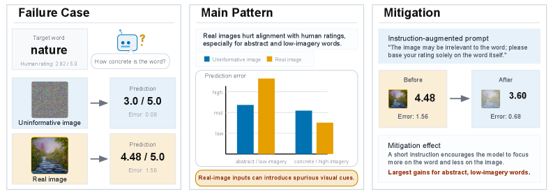
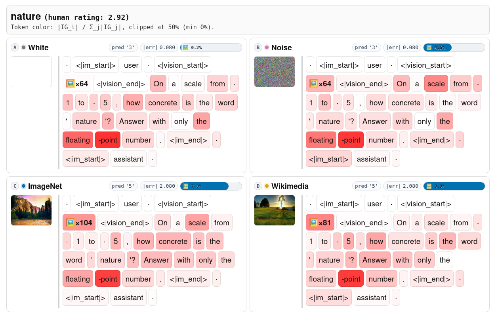
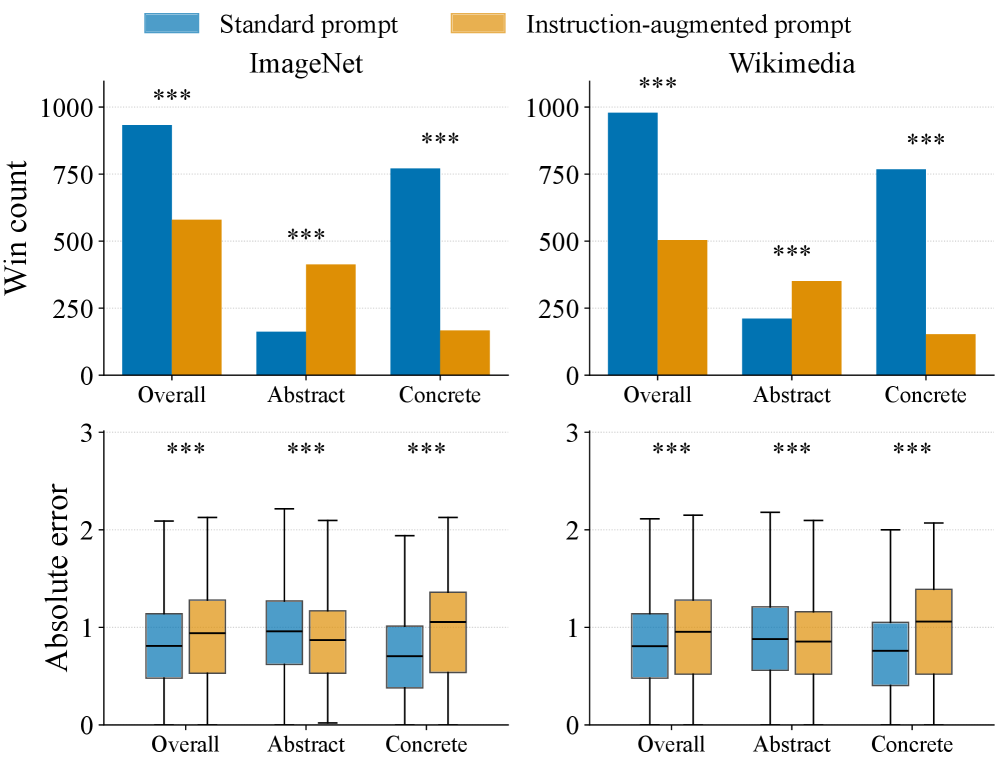
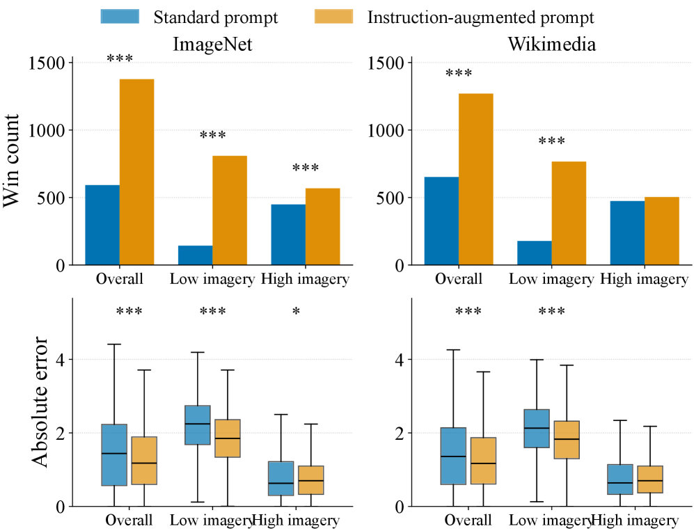

This paper shows that real-image contexts can hurt, rather than help, vision-language models' alignment with human lexical judgments, especially for abstract words, and proposes a simple prompting fix.
本文系统性地测试了视觉语言模型（VLM）在具体性和意象性评分任务中的表现，发现真实图像上下文反而会降低模型与人类判断的对齐度，尤其对抽象和低意象词汇影响显著。研究还提出了一种简单的推理时指令调整方法，可有效缓解这一退化现象。
Deep Note — real-images-worse-judgments
Key Takeaways - Real-image contexts often degrade VLM alignment with human concreteness and imagery ratings, especially for abstract and low-imagery words. - Text-only models sometimes outperform their multimodal counterparts on lexical judgment tasks, challenging the assumption that visual input always helps language understanding. - A simple inference-time instruction to focus on textual content can reduce the degradation caused by real images. - Real-image contexts are associated with representational shifts and greater sensitivity to spurious visual cues, weakening recovery of targeted lexical properties.
0) Metadata
- Title: Real Images, Worse Judgments: Evaluating Vision-Language Models on Concreteness and Imagery
- Alias: real-images-worse-judgments
- Authors: Yifan Jiang, Ruoxi Ning, Sheng Yao, Freda Shi
- arXiv ID: 2605.27315
- Published:
- Links:
- Abs: https://arxiv.org/abs/2605.27315
- HTML: https://arxiv.org/html/2605.27315v1
- PDF: https://arxiv.org/pdf/2605.27315
- Tags: vision-language-models, concreteness, imagery, visual-grounding, lexical-judgments
- Domains: ai_safety
- Rating: 4/5 (base 1 + quality 2 + observation 1)
1) Why-read
This paper shows that real-image contexts can hurt, rather than help, vision-language models' alignment with human lexical judgments, especially for abstract words, and proposes a simple prompting fix.
2) CRGP
C — Context
Vision-language models (VLMs) are often assumed to benefit from visual grounding, but prior work shows they can over-rely on superficial visual-textual correlations, leading to hallucinations and biases. Concreteness and imagery ratings are established psycholinguistic benchmarks for testing perceptual grounding in language understanding.
R — Related work
- Concreteness and imagery ratings as diagnostic signals for AI grounding (Shi et al., 2019; Alper et al., 2023; Ma et al., 2023)
- VLMs like CLIP, LLaVA, and InternVL3 learn joint visual-textual representations (Radford et al., 2021; Liu et al., 2023; Zhu et al., 2025)
- Text-only representations can outperform multimodal ones in capturing experiential semantic information (Bavaresco and Fernández, 2025; Xu et al., 2025)
- Models over-rely on superficial visual-textual correlations (Goyal et al., 2017; Agrawal et al., 2018; Yüksekgönül et al., 2023)
G — Gap
Prior work has not systematically tested whether VLMs can distinguish useful visual evidence from incidental image context in lexical judgments. The assumption that visual input always improves language understanding remains unexamined for controlled word-level tasks like concreteness and imagery rating.
P — Proposal
The authors evaluate instruction-tuned VLMs on human concreteness and imagery ratings under different visual contexts (no image, uninformative placeholders, real images). They find that real images often hurt alignment, especially for abstract/low-imagery words, and show that a simple instruction to focus on text at inference time reduces this degradation.
---
4) Experiments
Main results
On MT40k concreteness, RMSE for abstract words with real images (ImageNet) vs. no image: Gemma 3 (0.607 vs 0.730), InternVL3 (0.507 vs 0.600), Qwen2.5-VL (0.782 vs 0.765). On CP2004B imagery, RMSE for low-imagery words with real images (ImageNet) vs. no image: Gemma 3 (0.804 vs 1.662), InternVL3 (0.739 vs 1.590).
Ablation
Instruction-augmented prompting (focus on text) reduces RMSE for abstract words in Gemma 3 from 0.607 to 0.510 (ImageNet condition), showing the clearest gains on vulnerable subsets.
Limitations
['The study uses only two rating datasets (MT40k, CP2004B) and a limited set of VLM families.', 'The real-image contexts are retrieved from ImageNet and Wikimedia, which may not cover all possible incidental image types.', 'The inference-time prompting intervention is simple and may not generalize to more complex multimodal tasks.']
5) Why it matters
- Challenges the common assumption that visual input always improves language understanding in multimodal models.
- Provides a controlled diagnostic (concreteness/imagery) for testing visual grounding quality in VLMs.
- Suggests that current instruction-tuned VLMs need better calibration of when visual context should inform lexical judgments.
6) Next steps
- [ ] Test the effect of real-image contexts on other lexical judgment tasks (e.g., sentiment, formality).
- [ ] Explore training-time interventions (e.g., data augmentation, contrastive learning) to reduce sensitivity to spurious visual cues.
- [ ] Investigate whether similar degradation occurs in other multimodal domains (e.g., audio, video).
7) Scoring
4/5 = base 1 + quality 2 + observation 1
真实图像，更差判断：评估视觉语言模型在具体性和意象性上的表现
主要结论 - 真实图像上下文会降低VLM在具体性和意象性评分上与人类判断的对齐度，尤其对抽象和低意象词汇影响更大。 - 纯文本模型在某些词汇判断任务上表现优于多模态模型，挑战了“视觉输入总是有助于语言理解”的假设。 - 简单的推理时指令（如“专注于文本内容”）可以减轻真实图像带来的性能退化。 - 真实图像上下文会导致模型表征偏移，并增加对虚假视觉线索的敏感性，从而削弱对目标词汇属性的恢复能力。
1) 阅读理由
本文的关键发现是真实图像上下文会损害而非帮助视觉语言模型与人类词汇判断的对齐，并提出了一个简单的提示修复方法。
2) CRGP（背景 / 相关工作 / 差距 / 方案）
背景：视觉语言模型（VLM）通常被认为能从视觉基础中获益，但先前研究表明它们可能过度依赖表面的视觉-文本相关性，导致幻觉和偏见。具体性和意象性评分是测试语言理解中感知基础的成熟心理语言学基准。 相关工作：具体性和意象性评分作为AI基础诊断信号（Shi等人，2019；Alper等人，2023；Ma等人，2023）；CLIP、LLaVA和InternVL3等VLM学习联合视觉-文本表征（Radford等人，2021；Liu等人，2023；Zhu等人，2025）；纯文本表征在捕捉经验语义信息方面可能优于多模态表征（Bavaresco和Fernández，2025；Xu等人，2025）；模型过度依赖表面视觉-文本相关性（Goyal等人，2017；Agrawal等人，2018；Yüksekgönül等人，2023）。 差距：先前工作未系统测试VLM在词汇判断中能否区分有用视觉证据与无关图像上下文。视觉输入总能改善语言理解的假设在受控的词级任务（如具体性和意象性评分）中尚未得到检验。 提议：作者评估了指令微调VLM在不同视觉上下文（无图像、无信息占位符、真实图像）下的人类具体性和意象性评分。他们发现真实图像常损害对齐，尤其对抽象/低意象词汇，并表明推理时简单的“专注于文本”指令可减少这种退化。
3) 实验
在MT40k具体性数据集上，抽象词汇在真实图像（ImageNet）与无图像条件下的RMSE对比：Gemma 3（0.607 vs 0.730），InternVL3（0.507 vs 0.600），Qwen2.5-VL（0.782 vs 0.765）。在CP2004B意象性数据集上，低意象词汇在真实图像（ImageNet）与无图像条件下的RMSE对比：Gemma 3（0.804 vs 1.662），InternVL3（0.739 vs 1.590）。
消融实验
指令增强提示（专注于文本）将Gemma 3在ImageNet条件下抽象词汇的RMSE从0.607降至0.510，在脆弱子集上显示出最明显的改善。
局限性
['研究仅使用了两个评分数据集（MT40k、CP2004B）和有限的VLM家族。', '真实图像上下文来自ImageNet和Wikimedia，可能未覆盖所有可能的无关图像类型。', '推理时的提示干预方法简单，可能无法泛化到更复杂的多模态任务。']
4) 重要性
- 挑战了多模态模型中“视觉输入总是改善语言理解”的常见假设。
- 提供了一个受控的诊断方法（具体性/意象性）来测试VLM的视觉基础质量。
- 表明当前指令微调VLM需要更好的校准，以判断何时视觉上下文应影响词汇判断。
5) 下一步
- [ ] 测试真实图像上下文对其他词汇判断任务（如情感、正式度）的影响。
- [ ] 探索训练时干预（如数据增强、对比学习）以减少对虚假视觉线索的敏感性。
- [ ] 调查类似退化是否发生在其他多模态领域（如音频、视频）。




